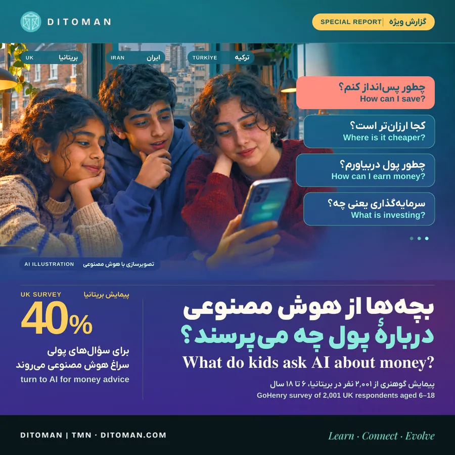
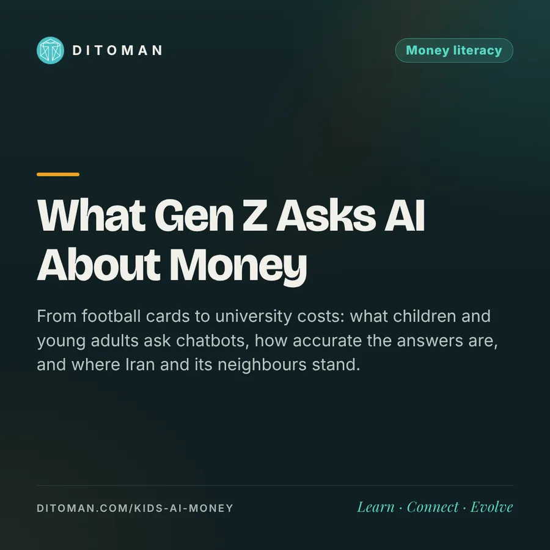

نسل Z از هوش مصنوعی دربارهی پول چه میپرسد؟
What Gen Z asks AI about money
From football cards to university costs: what children and young adults ask chatbots, how accurate the answers are, and where Iran and its neighbours stand.
از کارت فوتبال تا هزینهی دانشگاه: بچهها و جوانها از چتباتها چه میپرسند، جوابها چقدر درست است و ایران و همسایهها کجا ایستادهاند.
یک بچهی دهساله کارت فوتبالش را برداشته و از هوش مصنوعی میپرسد: «بفروشمش یا نگه دارم؟» در بریتانیا، از هر چهار بچهی دهساله یکی هر هفته با هوش مصنوعی حرف میزند، و ۴۰٪ بچهها و نوجوانهای ۶ تا ۱۸ ساله برای سؤالهای پولی سراغش میروند.
این عدد از پیمایش تازهی GoHenry (اپ مالی کودکان) است که فایننشال تایمز در یک ویدیو به آن پرداخته. ما خبر را باز کردیم و کنارش دادههای بریتانیا، آمریکا، ایران و همسایهها را گذاشتیم تا ببینیم این نسل واقعاً چه میپرسد، جوابها چقدر قابل اعتماد است و خانوادهها چه کاری از دستشان برمیآید.
۰۱. خبر چه بود؟
GoHenry در آبان ۱۴۰۵ نتایج پیمایشی از ۲٬۰۰۱ کودک و نوجوان ۶ تا ۱۸ سالهی بریتانیایی را منتشر کرد. بچهها برای این کارها از هوش مصنوعی کمک میگیرند:
| کاربرد | سهم |
|---|---|
| خرید هوشمندانه و مقایسهی قیمت | ۳۹٪ |
| راههای پول درآوردن | ۳۶٪ |
| هدف پسانداز | ۳۴٪ |
| سرمایهگذاری (پسرها ۲۲٪، دخترها ۱۵٪) | ۱۹٪ |
- ۳۷٪ گفتند از هوش مصنوعی برای پول درآوردن کمک گرفتهاند؛ بهطور میانگین حدود ۲۸ پوند.
- از هر چهار بچهی دهساله، یکی هر هفته از هوش مصنوعی استفاده میکند.
- با این همه، ۷۶٪ هنوز بیشتر از همه به پدر و مادرشان اعتماد دارند و ۷۳٪ میخواهند مدرسه کار با هوش مصنوعی را یادشان بدهد.
- ۳۶٪ گفتند والدینشان از استفادهی آنها حمایت نمیکنند و ۹٪ پنهانی از آن استفاده میکنند.
در ویدیوی فایننشال تایمز، نمونهی سؤالها اینها بود: بودجهبندی، قرض گرفتن، مالیات، سرمایهگذاری، هزینهی دانشگاه، فروش کارتهای فوتبال و فروش آنلاین دستسازهها.
ادعای شرکت یا داده؟ این پیمایش را یک شرکت فینتک کودکان انجام داده و منتشر کرده است. نمونه بزرگ است، ولی روش کامل آن عمومی نشده؛ عددها را نتیجهی همین پیمایش بدانید، نه آمار رسمی.
۰۲. بزرگترهای نسل Z چه میکنند؟
- آمریکا: طبق پیمایش اکسپرین (۲۰۲۴، ۲٬۰۱۱ نفر)، ۶۷٪ نسل Z از هوش مصنوعی مولد برای امور مالی شخصی استفاده کردهاند. Experian
- در پیمایش کردیت کارما (۲۰۲۵)، ۸۵٪ کسانی که از هوش مصنوعی مشورت مالی گرفته بودند گفتند به آن عمل کردهاند؛ و حدود نیمی از آنها (۵۲٪) گفتند دستکم یک بار به تصمیم اشتباه رسیدهاند. Credit Karma
- بریتانیا: نهاد ناظر مالی (FCA) در شهریور ۱۴۰۵ از ۶۶۶ نفر ۱۸ تا ۴۰ ساله پرسید: از هر پنج سرمایهگذار کمتجربه، چهار نفر از هوش مصنوعی کمک گرفتهاند. ۵۶٪ به هوش مصنوعی اعتماد داشتند، ۴۷٪ به تلویزیون و ۲۹٪ به اینفلوئنسرها. ۴۴٪ به اشتباه فکر میکردند اطلاعات مالی هوش مصنوعی زیر نظارت است. FCA
FCA از شرکتهای هوش مصنوعی خواسته به کاربران بگویند جوابشان مشاورهی مالی رسمی نیست. Finance Magnates
۰۳. جوابها چقدر درست است؟
خبر خوب و خبر محتاطانه کنار هم هستند:
- معلم خوبی برای مفهومهاست. در یک آزمایش MIT (۲۰۲۶)، گفتگو با GPT-4o باورهای غلط مالی شرکتکنندگان را حدود ۳۰ امتیاز در مقیاس ۲۰۰ امتیازی کم کرد. arXiv
- در عدد و قانون خطا میکند. سازمان مصرفکنندهی Which? (آبان ۱۴۰۴) چند دستیار را روی سؤالهای پولی آزمود: Perplexity ۷۱ از ۱۰۰، Gemini ۶۹، ChatGPT ۶۴ و Meta AI ۵۵. چند ابزار یک سقف غلط برای حساب پسانداز معاف از مالیات (ISA) را بیآنکه متوجه شوند پذیرفتند. Which?
- یک پژوهش صنعتی (Saturn، ۲۰۲۶) دقت میانگین جوابهای مالی را ۴۳٪ برآورد کرد؛ این را پژوهش یک شرکت بدانید، نه داوری مستقل. InvestmentNews
تحلیل دیتومان: هوش مصنوعی برای فهمیدن «سود مرکب یعنی چه» عالی است؛ برای «امسال سقف معافیت چقدر است» یا «این سهم را بخرم؟» باید جواب را با منبع رسمی چک کرد.
۰۴. ایران کجا ایستاده؟
پیمایش ایسپا دربارهی هوش مصنوعی در ایران (منتشرشده در ۱۴۰۴) میگوید زومیت:
- ۳۷٫۶٪ هنوز اسم ابزارهای هوش مصنوعی را نشنیدهاند و ۲۵٫۴٪ فقط اسمشان را میدانند.
- ۲۹٪ تا حدی با آنها کار میکنند و ۷٫۹٪ در کارشان حرفهای از آنها استفاده میکنند.
- ۹۰٫۳٪ کاربران ایرانی هوش مصنوعی از ChatGPT استفاده میکنند.
- کاربردهای اصلی: اطلاعات عمومی ۵۱٫۱٪، آموزش و درس ۴۴٫۱٪، ویرایش عکس و ویدیو ۳۸٫۷٪ و ترجمه ۳۰٫۵٪.
در گزارش مایکروسافت (فصل اول ۲۰۲۶)، ۱۲٫۶٪ جمعیت در سن کار ایران از هوش مصنوعی استفاده میکنند؛ میانگین جهان ۱۷٫۸٪ است. Microsoft
طرف امیدوارکننده: طبق شاخص هوش مصنوعی ایران ۲۰۲۴ (دانشگاه شریف)، پژوهشگران ایرانی در ۲۰۲۳ بیش از ۳٬۵۰۰ مقالهی هوش مصنوعی منتشر کردند Sharif، و سند ملی هوش مصنوعی هدف رسیدن به جمع ده کشور اول را تا ۲۰۳۲ گذاشته است. Eghtesad Online
چه چیزی را نمیدانیم
دادهی عمومی پیدا نکردیم که بگوید بچهها و نوجوانهای ایرانی چقدر برای سؤالهای پولی سراغ هوش مصنوعی میروند. عددهای بالا مربوط به بزرگسالان است. در سطح جهان، طبق دادههای OpenAI حدود ۴۶٪ پیامهای ChatGPT را کاربران ۱۸ تا ۲۵ ساله میفرستند. Computing
۰۵. همسایهها با چه سرعتی جلو میروند؟
سهم جمعیت در سن کار که از هوش مصنوعی استفاده میکنند (مایکروسافت، فصل اول ۲۰۲۶) و چند نشانه از نسل جوان:
| کشور | استفاده از هوش مصنوعی | نسل جوان و مدرسه |
|---|---|---|
| امارات | ۷۰٫۱٪ | برنامهی درسی هوش مصنوعی از مهدکودک تا پایهی ۱۲، از سال تحصیلی ۲۰۲۵–۲۶ |
| قطر | ۴۱٫۸٪ | — |
| عربستان | ۲۹٫۴٪ | آموزش هوش مصنوعی برای حدود ۶ میلیون دانشآموز از ۲۰۲۵–۲۶ |
| میانگین جهان | ۱۷٫۸٪ | |
| ترکیه | ۱۷٫۴٪ | ۳۹٫۴٪ جوانهای ۱۶ تا ۲۴ ساله هوش مصنوعی مولد به کار بردهاند |
| ایران | ۱۲٫۶٪ | ۷٫۹٪ بزرگسالان در کار از آن استفاده میکنند (ایسپا) |
| پاکستان | ۱۱٫۴٪ | ۲۶٪ زیر ۳۰ سالهها استفاده کردهاند (گالوپ) |
- در ترکیه، طبق BCG، ۲۱٪ کاربران جوان هوش مصنوعی از آن برای امور مالی کمک میگیرند. Daily Sabah
- در ترکیه و پاکستان یک الگو دیده میشود: جوانها تقریباً دو برابر کل جمعیت از هوش مصنوعی استفاده میکنند (ترکیه ۳۹٫۴٪ در برابر ۱۹٫۲٪؛ پاکستان ۲۶٪ در برابر ۱۵٪).
- بریتانیا هم آموزش مالی را از ۲۰۲۸ وارد دبستانهای انگلستان میکند.
۰۶. پنج قاعده برای خانوادهها
- از هوش مصنوعی «توضیح» بخواهید، نه «تصمیم». بپرسید «تورم یعنی چه» یا «این دو گزینه چه فرقی دارند»، نه «چه کار کنم».
- عدد و قانون را از منبع رسمی چک کنید. نرخ سود، مالیات، کارمزد و سقفها زود عوض میشوند.
- بپرسید «ریسکش چیست؟» و از او بخواهید دلیل مخالف را هم بگوید.
- اطلاعات حساب، رمز و کد تأیید را هرگز در چت وارد نکنید.
- با بچهها کنار هم بپرسید. ۷۶٪ بچهها هنوز بیشترین اعتماد را به پدر و مادر دارند؛ هوش مصنوعی میتواند بهانهی خوبی برای اولین گفتگوی پولی خانه باشد.
۰۷. نگاه دیتومان
نسل Z سؤالهای پولیاش را جایی میپرسد که خجالت نمیکشد و جواب فوری میگیرد. این خبر بدی نیست: بچهای که در دهسالگی میپرسد «پسانداز یعنی چه» یک قدم از خیلی از بزرگسالها جلوتر است. در آزمون PISA ۲۰۲۲، حدود ۱۸٪ نوجوانهای ۱۵ سالهی کشورهای OECD حتی به حداقل سواد مالی نرسیدند OECD؛ هوش مصنوعی میتواند این فاصله را کم کند، به شرط آنکه کنارش عادت چک کردن و گفتگو با خانواده هم بیاید. ما این مسیر را با هم دنبال میکنیم؛ بخش آموزش دیتومان هم برای همین ساخته شده.
منابع
- GoHenry، «Kids’ Eye View of AI»، آبان ۱۴۰۵: FF News · GoHenry Press
- Financial Times، ویدیوی گزارش دربارهی بچهها و مشاورهی مالی هوش مصنوعی: FT
- Experian، ۲۰۲۴: Experian · Credit Karma، ۲۰۲۵: Credit Karma
- FCA، شهریور ۱۴۰۵: FCA · Finance Magnates
- Which?، آبان ۱۴۰۴: Which? · Saturn، ۲۰۲۶: InvestmentNews · MIT، ۲۰۲۶: arXiv 2604.27022
- OECD، PISA 2022 جلد چهارم: OECD
- ایسپا، هوش مصنوعی در ایران: زومیت · Microsoft AI Diffusion Report، فصل اول ۲۰۲۶: PDF · The National
- ترکیه، TÜİK ۲۰۲۵: Para Dergi · Daily Sabah · پاکستان، گالوپ: CW Pakistan
- امارات: Gulf News · عربستان: Fast Company ME
- شاخص هوش مصنوعی ایران ۲۰۲۴، دانشگاه شریف: PDF · سند ملی هوش مصنوعی: Eghtesad Online · OpenAI: Computing
آخرین بازبینی: ۱۹ آبان ۱۴۰۵. تاریخ دقیق انتشار پیمایش ایسپا در منابع متفاوت آمده است.